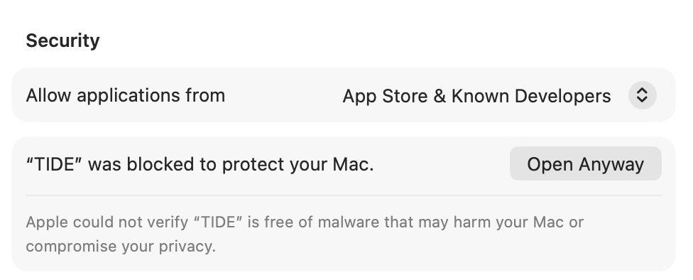
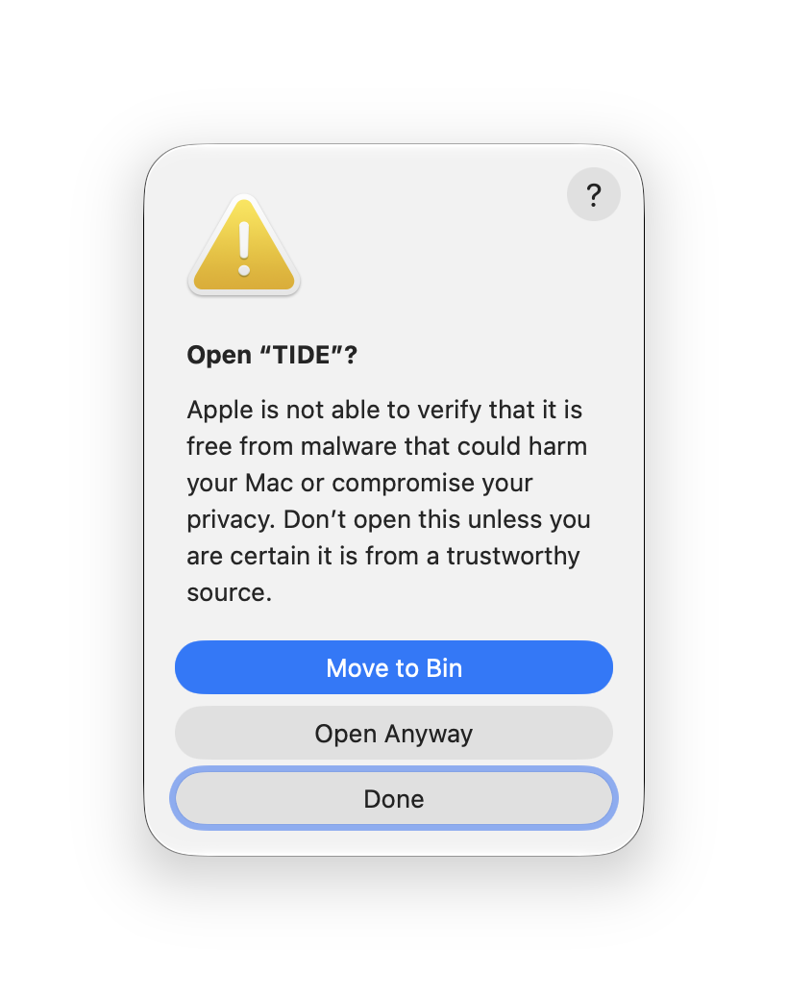

macOS blocks it the first time. Click Done — not Move to Bin.
System Settings › Privacy & Security, scroll down to Security and click Open Anyway.

Then enter your password or use Touch ID. You only do this once.
